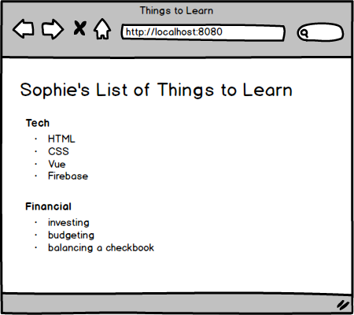

Assignment: Using Multiple Components
Objectives:
- Practice using multiple components
Now it's time to practice using what we've talked about. How many components do you think you'll need? How can you write your code to make your components reusable?

-
Make a plan for the components you need to create.
- If you're still feeling a little bit uncertain, follow the pattern we've just walked through--have one component that contains the header and one component for the list. We'll have 2 instances of the list component.
- If you're feeling adventurous, try to break it down into a few more components.
Create a new project using the Vue CLI.
Update the HelloWorld.vue and add any additional components necessary.
Update the App.vue file as needed.